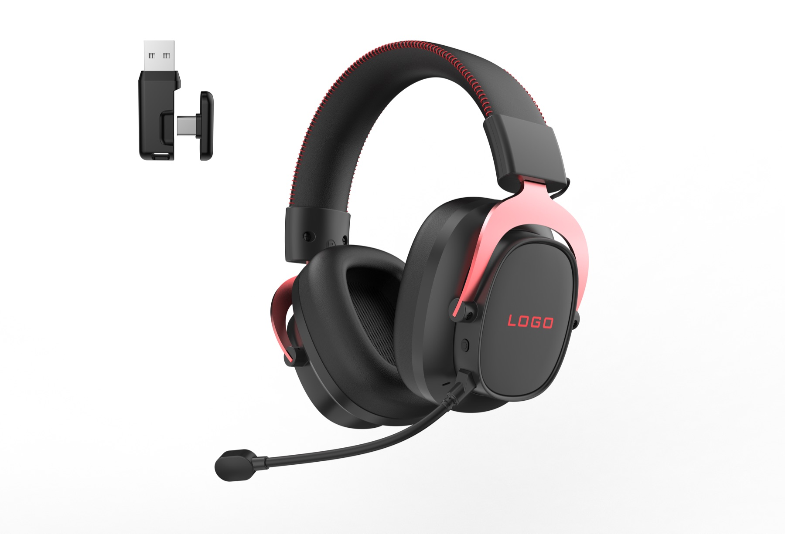

Verification of RED Compliance
SIT240719190301. Issued by Shenzhen SIT Testing Technology Co., Ltd.
View original CE/RED PDF
Import preparation
A supplier has sent a CE or RoHS certificate. Does it cover the headset you plan to order? Start with the model list, the company named on the document and the issue date. Then match the paperwork to your selected sample, receiver and destination market.
You can open the original CE/RED and RoHS PDFs below without leaving your email. They cover a stated model list, not every headset shown on this website.

Short answer
For a gaming headset order, documents are not a separate last-minute task. They should be reviewed alongside the approved model, connection type, battery or wireless configuration, labeling, packaging and destination market.
Open the originals
Do not decide from the logo or a similar-looking headset. Open the file and compare its named models and configuration with the version you are discussing.
SIT240719190301. Issued by Shenzhen SIT Testing Technology Co., Ltd.
View original CE/RED PDFSIT240719190302R; referenced report SIT240719190302RR. Issued by Shenzhen SIT Testing Technology Co., Ltd.
View original RoHS PDFNamed company: Nanrui Electronic Technology Co., Ltd. Original issue date: July 31, 2024. Listed models: PHX-WPRO, G938, G939, G926, G927, G922 and G923.
The files do not name TALRIVO as the certificate holder. Company names, dates, model lists and stamps are unchanged. Check the company on the original document rather than substituting the website brand.
G936 is not listed in these two PDFs. For an unlisted model, ask for a separate document check rather than assuming it is covered. A listed code also does not establish that every current receiver, battery or headset version has the same configuration.
These are original references, not a new issuer verification or a complete set of shipment and destination-market documents. Confirm the current version, applicable supporting reports and any later product changes separately. You can also view the complete certificate previews and scope notes.
Buyer checklist
This is a purchasing checklist, not a promise that every document applies to every model or destination market.
Confirm where the products will be sold and whether they are intended for retail, e-commerce, distribution or another channel. This is the starting point for a relevant document review.
Identify the model and its final configuration: wired, Bluetooth, 2.4GHz USB receiver, or another version. Similar-looking models can have different technical details.
For wireless products, confirm the final battery, charging and wireless configuration before asking what supporting information is needed for the order and shipment.
Review product labels, retail box direction, language needs, included accessories and user information early, especially for private-label projects.
The approved sample and written product specification should remain the reference. If color, accessories, packaging or electronics change, ask what should be reviewed again.
Agree on which documents will be reviewed, for which product version and at what stage. Do not leave the destination-market discussion until shipment is close.
Questions to send
“Please confirm the document scope for the approved G941 configuration, including the selected color, receiver version, accessory set and packaging.”
“The target market is [country or region]. Please advise which product, label, packaging or transport information should be reviewed for this configuration.”
“If we change the battery, wireless version, logo, packaging or accessories after sample approval, which items should be checked again?”
“Please share the available document list and identify which version of the product each item relates to. We will review the final market requirements with the relevant parties.”
FAQ
First confirm the destination market, exact model and wireless version. Then ask which applicable product, battery, labeling, packaging and transport documents can be provided for that confirmed version.
The approved model, color, wireless version, accessory set and packaging direction make a document request clearer. Changes made later may affect what needs to be checked again.
No. Requirements can differ by destination market, product configuration and sales channel. Share these details before requesting a document review.
No. Match the document to the exact model and configuration, then confirm whether it applies to the version and destination market you are ordering for. A similar product photo or a listed model code alone is not enough.
Related TALRIVO pages
The approved sample becomes the reference for sound, microphone, wireless behavior, comfort and production readiness.
Prepare product selection, packaging and market discussion for European audio buyers.
Review logo placement, color, packaging and user manual language as part of the final product direction.
Send target market, model interest, quantity range, branding needs and timeline for a clearer discussion.
Not sure whether a file matches your headset? Send the model or photo, connection mode, destination market and document number you are looking at. You do not need a finished RFQ to ask.